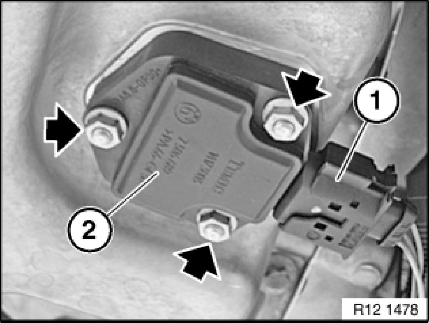

Oil Level Sensor: Service and Repair
12 61 285 - Replacing engine oil level sensor (N52/N52K/N51/N46/N54/N53)

Important!
Read and comply with notes on protection against electrostatic damage (ESD protection) 61 35 ... Notes on ESD Protection (Electro Static Discharge).

Necessary preliminary tasks:
- Switch off ignition
- E60/E63/E64/E83/E85/E86/E70/E71 only:Remove reinforcement plate Service and Repair
- E70/E81/E87/E82/E88/E90/E91/E92/E93 only:Remove underbody protection Removing and Installing/Replacing Front Underbody Protection
- Drain off engine oil Engine Oil

Unlock plug (1) and remove.
Unscrew nuts.
Tightening torque 12 61 2AZ.
Remove oil level sensor (2).
Installation Note:
Clean sealing face on oil sump.
Replace seal on oil level sensor.
An excessively low torque value will result in oil leaks.
An excessively high torque value will result in damage to the oil level sensor.
Top up engine oil.